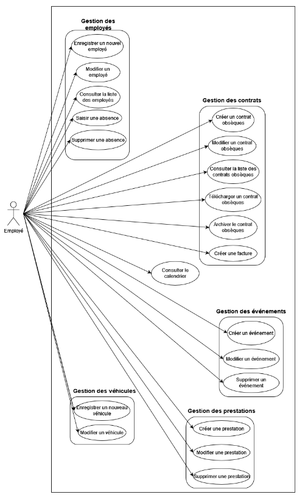

ACDécès
Conception et développement d'une application de gestion d'obsèques pour les pompes funèbres.
Réalisations de l'équipe
Cadrage du projet :
- Identification des besoins fonctionnels et non-fonctionnels
- Analyse des contraintes et des risques
- Organisation du projet : répartition des tâches, communication
Conception :
- Cas d'utilisation détaillés : scénarios nominaux et alternatifs, priorisation des cas d'utilisation
- Diagramme de classe et diagrammes d'objets
- Diagramme de séquences
Développement :
- Développement du programme en Java
- Développement des interfaces en JavaFX
Mes contributions
- Analyse des contraintes et des risques
- Rédaction et mise en page de tous les livrables
- Détails des cas d'utilisation (différents scénarios)
- Réalisation du diagramme de classe
- Conception des interfaces
- Développement des interfaces en JavaFX
Outils utilisés
UML
Maquettes
Java
JavaFX
Compétences
- Concevoir des interfaces utilisateur ergonomiques
- Créer des maquettes pour communiquer avec l'utilisateur et préparer le développement
- Développer des interfaces utilisateur
Présentation de l'application

Diagramme des cas d'utilisation (détaillé dans le "Dossier de conception")
